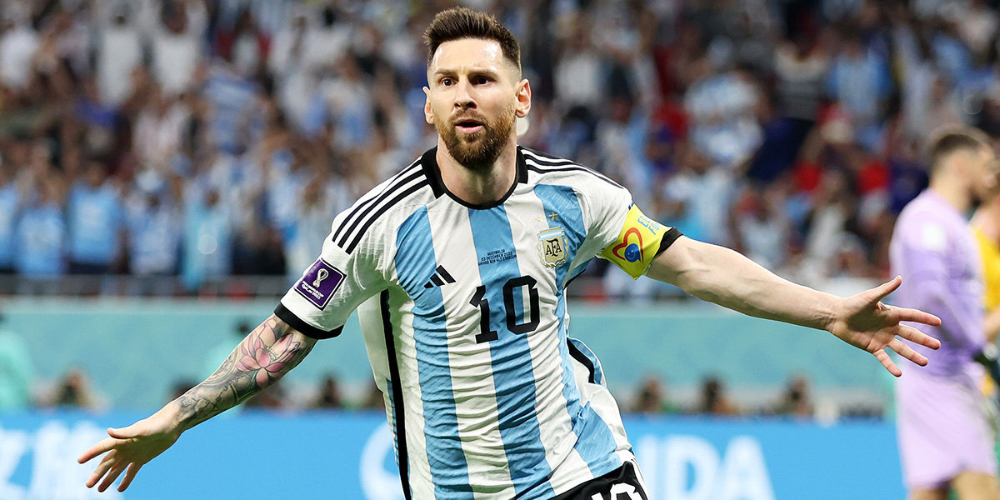

подробно о месси

Лионе́ль Андре́с Ме́сси Куччитти́ни[a] (исп. Lionel Andrés Messi Cuccittini
, испанское произношение
родился 24 июня 1987, Росарио, Аргентина)
— аргентинский футболист, нападающий и капитан
клуба MLS «Интер Майами», капитан сборной Аргентины.
Чемпион мира, двукратный обладатель Кубка Америки,
олимпийский чемпион. Считается одним из лучших футболистов всех времён[7][8][9].
Лучший бомбардир в истории чемпионата Испании, «Барселоны»,
«Интер Майами» и сборной Аргентины. Восьмикратный обладатель
«Золотого мяча»[b] и шестикратный — «Золотой бутсы». Воспитанник академии
«Барселоны», вместе с этим клубом выиграл десять титулов
чемпиона Испании, четыре Лиги чемпионов УЕФА, семь Кубков Испании,
восемь Суперкубков Испании, три Суперкубка УЕФА и три
чемпионата мира среди клубов. Двукратный чемпион Франции
и обладатель Суперкубка Франции в составе «Пари Сен-Жермен».
В возрасте 13 лет вместе с родителями переехал в Испанию,
чтобы присоединиться к молодёжной команде «Барселоны», в октябре 2004
года дебютировал за основной состав этого клуба. В течение своих первых лет
в «Барселоне» ему удалось стать неотъемлемым игроком стартового состава,
а в сезоне 2008/09 Месси вместе с клубом выиграл свой первый «требл» и
«Золотой мяч». Он становился обладателем «Золотого мяча» в течение следующих
трёх лет и стал первым игроком, получившим эту награду четыре раза
подряд[10]. В сезоне 2011/12 Месси установил рекорд по количеству
голов, забитых за один сезон в чемпионате Испании, а также во
всей Европе[11]. В сезоне 2014/15 он стал лучшим бомбардиром
чемпионата Испании за всю историю и во второй раз выиграл «требл»
со своим клубом. В 2018 году стал капитаном «Барселоны», а в 2019 году
в шестой раз получил «Золотой мяч», установив рекорд по их количеству
у одного игрока. В 2021 году контракт аргентинца с «Барселоной»
завершился и из-за финансового положения каталонского клуба не
был продлён. В связи с этим Месси стал свободным агентом и бесплатно
перешёл во французский «Пари Сен-Жермен». В 2022 году побил рекорд
немецкого футболиста Лотара Маттеуса по числу матчей на чемпионатах мира[12].